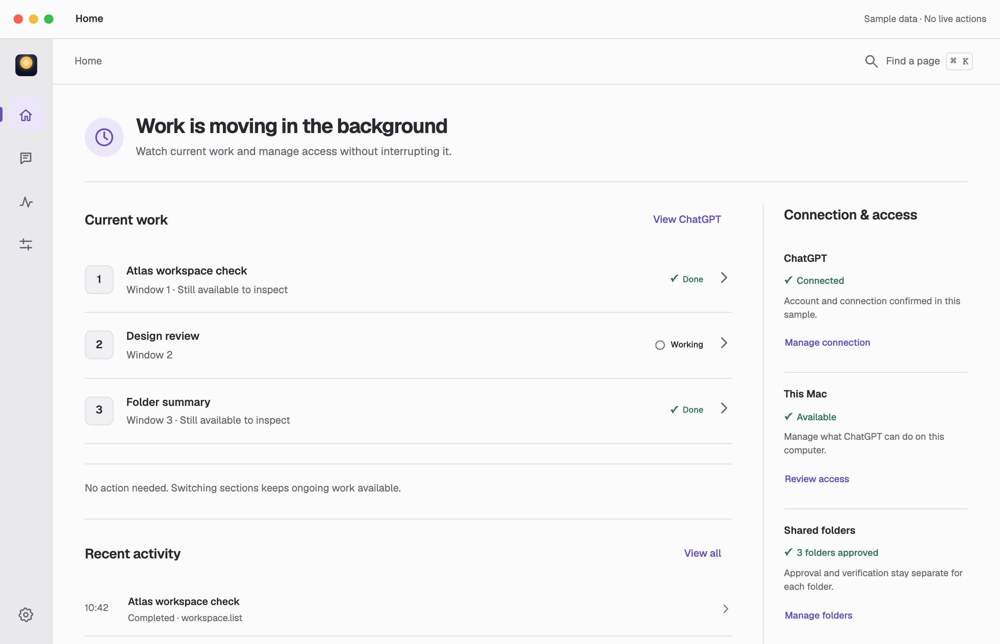
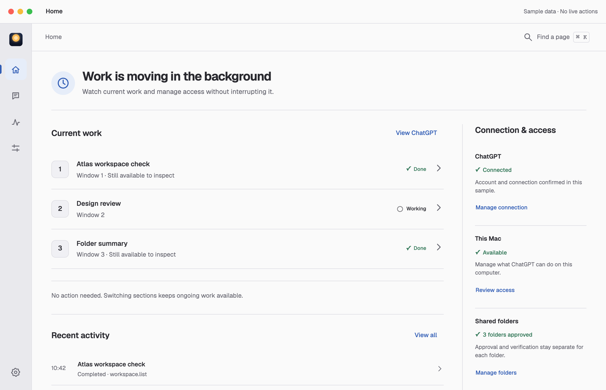
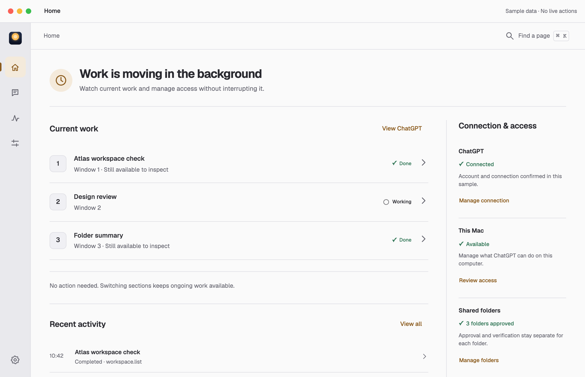
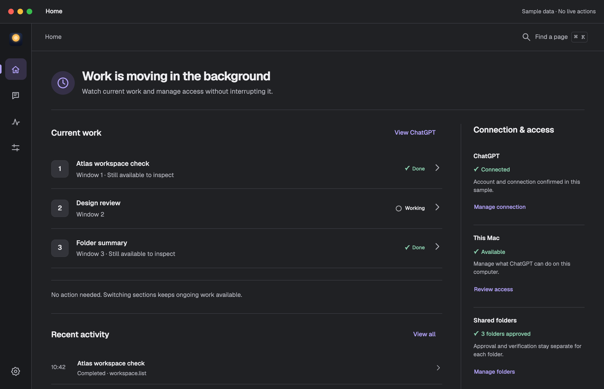
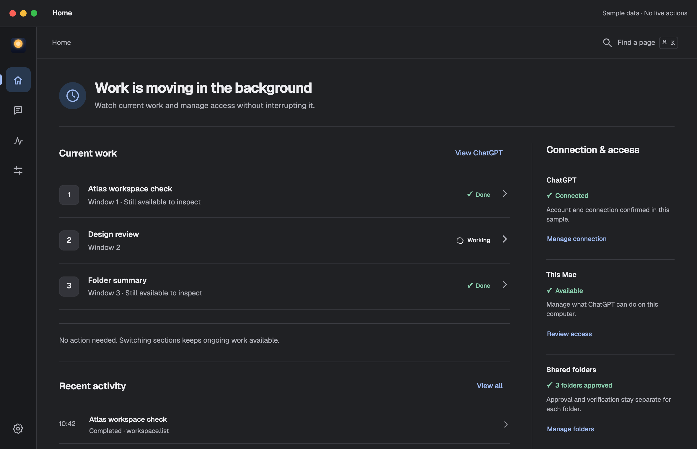
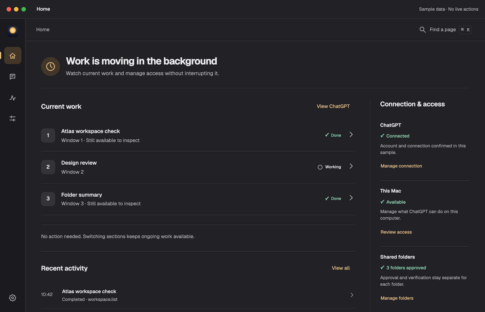
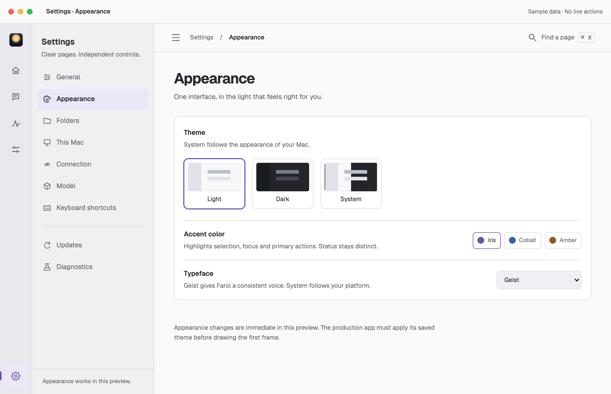
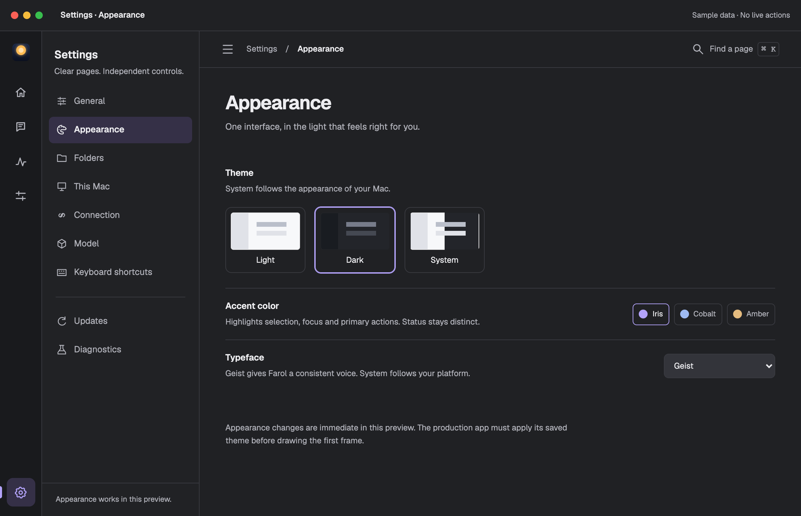

Iris
Quiet, familiar selection with a warm lamp.
Same composition, task state and viewport. Three independent accents. Sample data.

Quiet, familiar selection with a warm lamp.

A clearer instrument-like accent beside the warm mark.

One warm family for mark and selection.

Soft violet selection in a neutral workspace.

Cool blue selection with an amber brand core.

Warmer character; review its distinction from attention states.

System, Light or Dark. Accent and typeface are separate choices.

The same settings page and hierarchy.
Updated 2 October 2026. The original three-direction comparison is preserved in the first exploration. No installed application or production source was changed.